Neuron Wallet Guide
Neuron Wallet is a CKB wallet produced by the Nervos Foundation, it holds your keys and can create and broadcast transactions on your behalf. Now Neuron Wallet has bundled a CKB Mainnet node and configured to connect to the CKB Mainnet. After installation, as you open the Neuron Wallet, the bundled Mainnet node will run.
You can also run a CKB mainnet node yourself and launch Neuron wallet, then Neuron will NOT start the bundled node, but connects to your node instead.
Please follow these instructions which are explained in detail below：
- Download and install Neuron Wallet
- Wait for the synchronization to end
- Create a new wallet or import your keystore file or seed phrase to the Neuron Wallet
- Claim vesting/locked token
- Deposit into Nervos DAO
- Withdraw from Nervos DAO
- Transfer CKBytes from the Neuron Wallet to other wallets and exchanges
If you run into issues when following this guide, please join the Support channel for support.
IMPORTANT: The Nervos Team will NEVER ask for your private key, keystore file, mnemonic seed phase or wallet password. You should NEVER share this information with anyone, doing so may result in loss of all your tokens.
1. Download and install the Neuron Wallet
Download the latest release version of the Neuron Wallet from the Neuron Wallet releases page on Github and install it. Please make sure that the version is latest version. Import your keystore file or seed phrase that was previously generated by Neuron Wallet (full guide below), wait for the synchronization to end, and then you should see that the wallet’s balance has changed.
2. Wait for the synchronization to end
You can cross-check the Block Number with CKB-Explorer's Latest Block to make sure the synchronization to end.
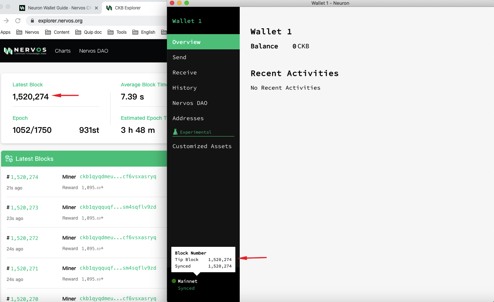
3. Create a new wallet or import existing keystore file or seed phrase to the Neuron Wallet
If you are using a new wallet, you can simply follow the steps within the Neuron Wallet.
If you have already backup the wallet and have the keystore file (use the Backup Current Wallet ) or write down the seed , you need import the existing keystore file or seed, please follow the steps below.
- Backup Current Wallet:
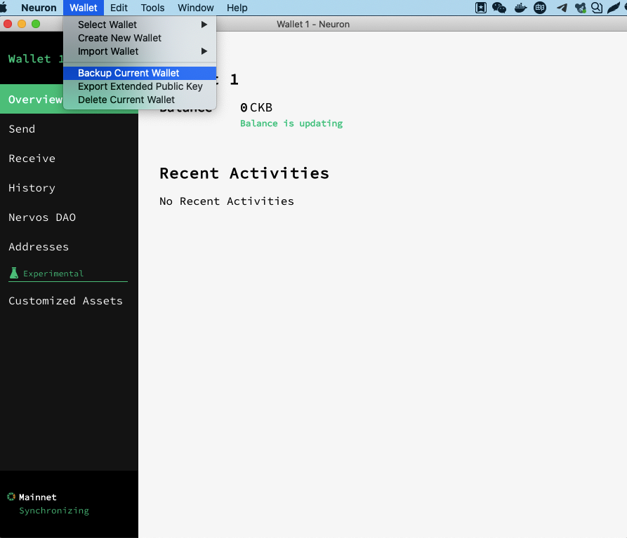
- To import the mnemonic seed phrase, choose “Import Wallet Seed”, fill in your password and wait for synchronization to end. The password does not need to match the original password from the Neuron Wallet.
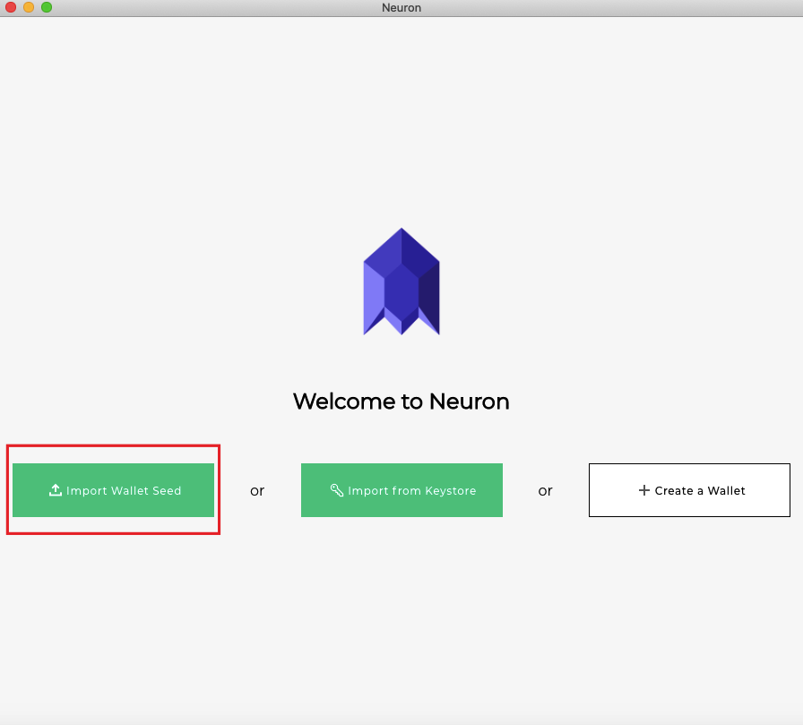

- To import the keystore file, choose “Import from Keystore” and input your password - Wait for synchronization to end. The password must match the original password from the Neuron Wallet.
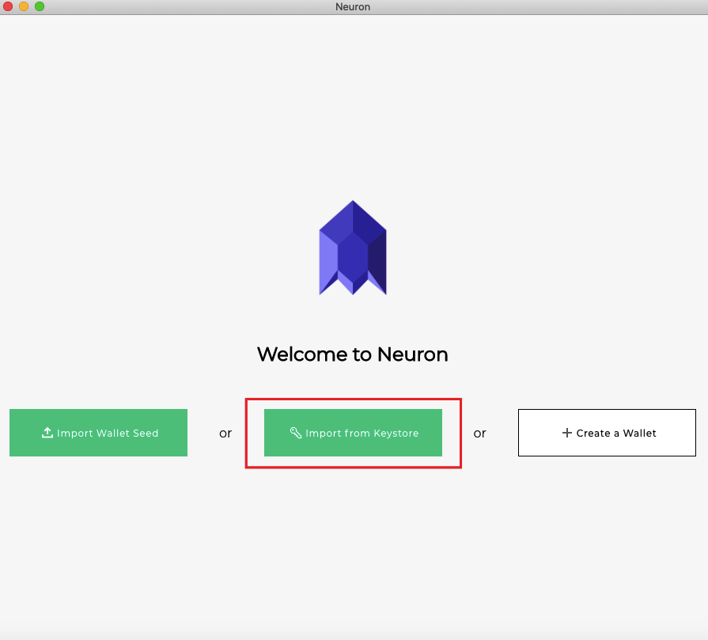
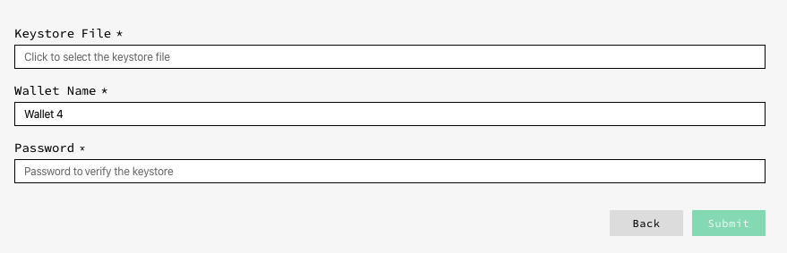
Congratulations, once the Neuron wallet is synced, you will have full access to your tokens! You can send and receive CKBytes and deposit into the Nervos DAO.
4. Claim vesting/locked tokens
You may claim your vesting or locked tokens by the latest version（v0.30.0-rc1 or later）. Please patiently wait until Neuron is fully synced, the assets will automatically appear on the "Customized Assets" page. You have to manually claim it before you can transfer it or deposit it to Nervos DAO.
- View the details on "Customized Assets"
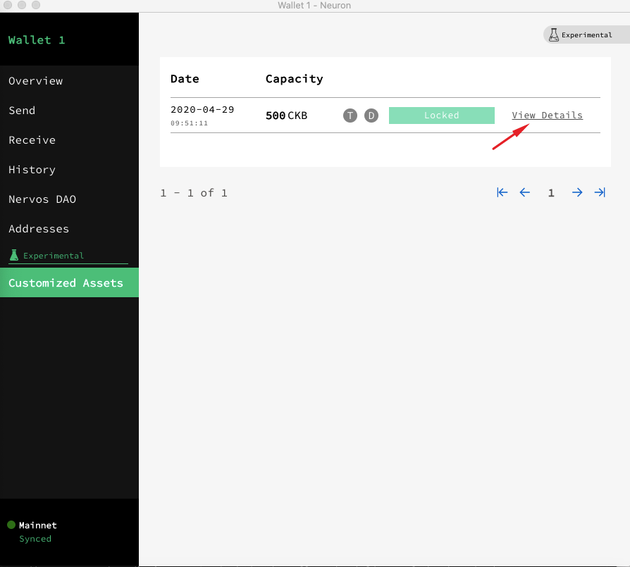
- Claim the vesting/locked tokens
When the lock time has been reached，click Claim and input the wallet's password.
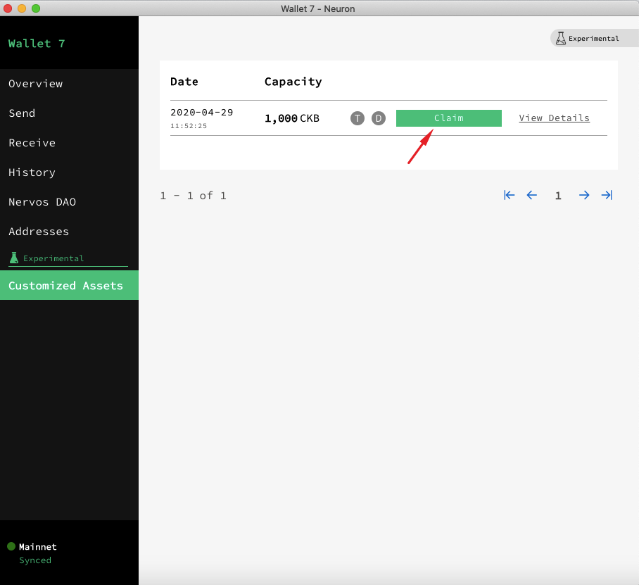
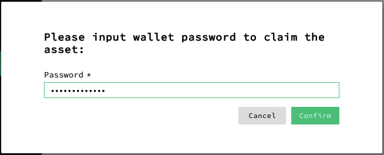
5. Deposit your Nervos CKByte tokens into Nervos DAO
The economic model of Nervos CKB is designed to allow token holders to lock tokens in the Nervos DAO to mitigate the inflationary effect of the secondary issuance. In this case, the inflationary effect of secondary issuance is expected to be nominal, equivalent to holding tokens with a hard cap. Please refer to Nervos DAO Explained for more details).
Please make sure your balance is greater than 102 CKB.
- Open the Neuron Wallet (the latest version), select “Nervos DAO” and “Deposit”.

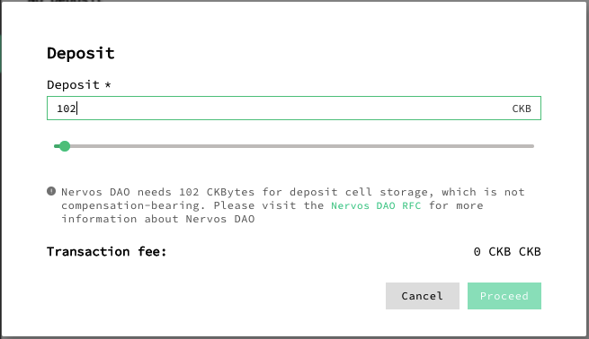
6. Withdraw your Nervos CKByte tokens from the Nervos DAO
Please read the disclaimer below before transacting on mainnet
You can click Request withdraw to withdraw your CKB.
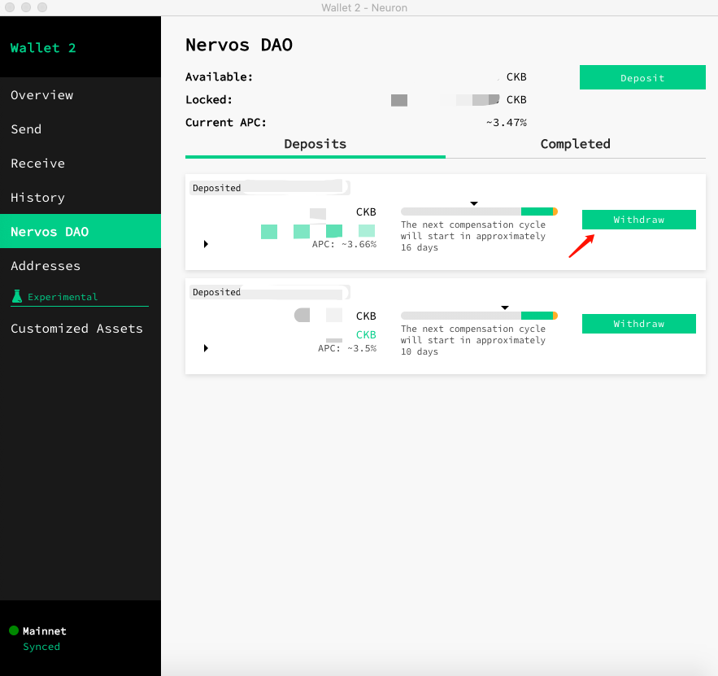
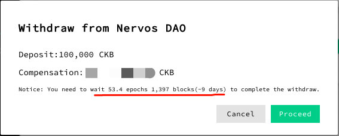
7. Transfer CKBytes from the Neuron Wallet to other wallets and exchanges
Please read the disclaimer below before transacting on mainnet
You should have the third party wallet/exchange destination address. Please make sure your balance is greater than 62 CKB.
- Under the “Send” tab, fill in the address details in the "Send to" field. Turn on the "Advanced fee settings" and fill in the "Transaction fee" — click the "Send" button to complete your transfer.
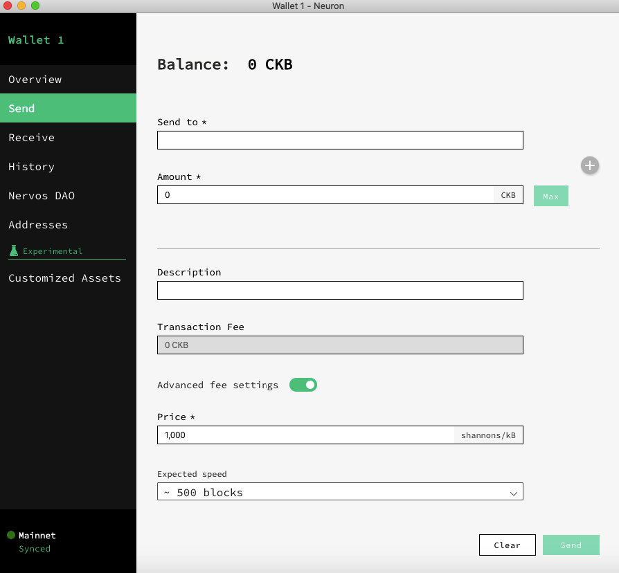
Troubleshooting
Sync failed, please check network. /Sync is slow.
- Quit and restart app several times.
Note: The Neuron bundled CKB node requires VC++ redistributable on Windows to work properly.
If step1 can't resolve, please run a CKB mainnet node and make sure the version is v0.31.0 or later instead of running the Neuron bundled node.
if it still doesn't work out, please join the Support channel, export debug information and send it.
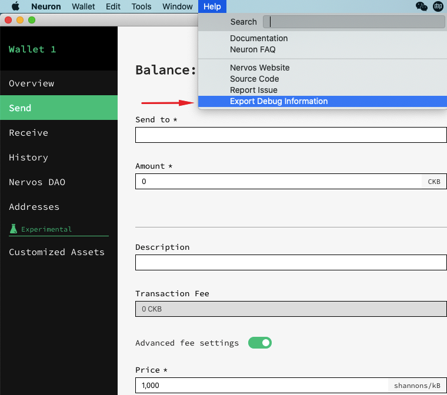
Important
The bootstrapping of a proof-of-work (PoW) chain is difficult. A new PoW chain is in many ways like a newborn baby — weak in the beginning, but with unlimited potential when mature.
For a new PoW chain, risks may come from:
- Unstable Hashrate：as the mining rewards will change drastically upon mainnet launch, an increase of hashrate is anticipated. It will create forks and uncle blocks in the first few weeks and the block time may be longer than expected due to NC-MAX's self adjustment. For security, using a sufficiently large confirmation number is recommended before transferring CKBytes.
- Immature Toolchain：Early adopters of CKB technology should have a good understanding of NC-MAX, Cell model and CKB-VM to begin, otherwise mistakes or bugs may be created unintentionally. The SDKs provided by Nervos Foundation are convenient tools to simplify RPC invocation and transaction building/signing/sending but have not been tested in a production environment yet, Please use them cautiously.
We recommend CKB users exercise strong diligence in making any transactions during the first 2 to 4 weeks of mainnet as the chance of a re-org (reorganization of the current valid chain) is possible and may reverse transactions that had previous been sent. If you need to send transaction in the early weeks, choose a sufficiently large confirmation number before transferring CKBytes.
Disclaimer
AS A DECENTRALIZED BLOCKCHAIN, NERVOS FOUNDATION DOES NOT CONTROL NERVOS CKB OR CKBYTES AND DOES NOT HAVE THE ABILITY TO STOP, BLOCK OR REVERSE ANY TRANSACTIONS. NERVOS FOUNDATION DOES NOT MAKE ANY WARRANTIES WHATSOEVER WITH RESPECT TO THE NERVOS CKB OR CKBYTES, INCLUDING ANY (i) WARRANTY OF MERCHANTABILITY; (ii) WARRANTY OF FITNESS FOR A PARTICULAR PURPOSE; (iii) WARRANTY OF TITLE; OR (iv) WARRANTY AGAINST INFRINGEMENT OF INTELLECTUAL PROPERTY RIGHTS OF A THIRD PARTY; WHETHER ARISING BY LAW, COURSE OF DEALING, COURSE OF PERFORMANCE, USAGE OF TRADE, OR OTHERWISE. YOU ACKNOWLEDGE THAT YOU HAVE NOT RELIED UPON ANY REPRESENTATION OR WARRANTY MADE BY THE FOUNDATION OR ANY OTHER PERSON ON ITS BEHALF. YOU ASSUME ALL RISKS AND LIABILITIES FOR THE RESULTS OBTAINED BY THE USE OF ANY CKBYTES AND REGARDLESS OF ANY ORAL OR WRITTEN STATEMENTS MADE BY THE FOUNDATION, BY WAY OF TECHNICAL ADVICE OR OTHERWISE.